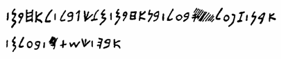
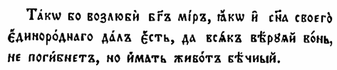

ТЕОРИЯ ПИСЬМА (ГРАММАТОЛОГИЯ)
1. Письмо как знаковая система.
2. Развитие письма и его виды.
5. История русской графики и орфографии.
6. Дешифровка древних текстов.
I. ПИСЬМО
КАК ЗНАКОВАЯ СИСТЕМА
Многие века люди пытаются изобрести машину времени. Но в действительности она уже существует. Речь идет о письме. С помощью книг мы можем перенестись в далекое прошлое и неизвестное будущее. Только человек часто не замечает этого. Ведь естественный человеческий язык возникает и функционирует прежде всего как система звуковых знаков, как устная речь. Звуковой форме языка столько же лет, сколько и самому человеку: весь период становления человека составляет приблизительно 5—7 млн лет. Человек же как сформировавшийся вид хомо сапиенс существует примерно 40—50 тыс. лет. Письму же — всего лишь примерно пять тысяч лет. Получается, что письмо сопровождает человеческий язык лишь на последнем, очень кратком отрезке его развития. Вторичность письменной формы проявляется и в том, что есть немало людей, для которых язык представлен только своей устной формой: они попросту неграмотны. И тем не менее на современном этапе письменная форма языка выступает как достойный спутник формы звуковой. Можно даже утверждать, что кое в чем письмо теснит своего «соперника». Из чего это следует?
Возможности устной речи ограничены. Письмо относится к величайшим изобретениям человечества, раздвинувшим границы общения. Оно позволило преодолеть время и пространство, сохранять и накапливать информацию в течение веков. И сегодня мы наблюдаем явный прогресс письменной формы языка.
Роль письма неизменно возрастает. Письмо стало второй формой существования языка, удачно дополняющей первую (устную). Прогресс во всех областях жизни в значительной мере обусловлен существованием письма. По сравнению с языком в его устной форме письмо оказалось более эффективным средством передачи и хранения информации. Накопленные знания, записанные на бумаге или на другом материале, легче сохранялись в случаях стихийных бедствий, войн и других социальных катастроф. Даже в наше время, когда изобретены средства хранения звучащей речи, роль письма не уменьшается.
Характерная для современного общества массовая, почти поголовная грамотность, доступность обучения чтению и письму, важность книгоиздания как отдельной отрасли культуры, бурное развитие печатных средств массовой информации (газет, журналов), входящие в наш быт компьютеры, факсы, электронная почта — все это свидетельства быстрого прогресса письменной формы языка. Действительно, письменная информация воспринимается и перерабатывается человеком быстрее, чем слуховая, письмо более «членораздельно», чем устная речь (буквы четко отделяются друг от друга, особенно в печатном виде) и более «интернационально» (разные народы могут пользоваться одной и той же буквенной системой). Все это говорит о возрастании роли письма и некотором «отступлении в тень» на этом фоне первичной — звуковой — материи языка.
Термин письмо может употребляться в широком и узком значении. В широкое понятие письма можно включить все оптические знаки (рекламные значки, дымовые знаки, светофор). В узком смысле инвентарь письма составляют буквы, цифры, математические знаки и знаки препинания.
Письмо (письменность) – коммуникативная система графических знаков и правил их комбинирования, использующихся для фиксации речи с целью передачи ее на расстоянии или закрепления во времени.
Письмо является объектом изучения разных наук: графологии (почерковедения), палеографии (науки о древних текстах) и пр. Теория письма (грамматология) состоит из трех разделов (графика, орфография, пунктуация), которые изучают начертательные знаки с различных точек зрения.
Языкознание изучает графический знак как абстрактную единицу языка – графему, имеющую языковые варианты - аллографы. В процессе письменного общения они реализуются конкретными единицами речи - графами. (Сравните соотношение единиц языка и речи: фонема – фон, морфема – морф). Например, графема А может иметь печатные и рукописные варианты, быть прописной (большой) и строчной.
II.
РАЗВИТИЕ ПИСЬМА И ЕГО ВИДЫ
Происхождение письма следует относить к тем эпохам, когда у человека возникла потребность сохранить информацию во времени или передать ее на расстояние, то есть на определенном этапе развития общественных отношений, в раннеклассовом обществе.
Современные системы письма были созданы человеческим гением относительно недавно, около 6000 лет тому назад. Изображать людей и животных в своих рисунках на камне, на стенах пещер наши предки начали десятки тысяч лет назад. Но эти рисунки не сводились в систему письма. Становление же письма в собственном смысле слова опиралось на длительные поиски оптимальных средств для сохранения информации. Письму предшествовали так называемые протописьменности: вещное письмо и пиктография.
Вещное письмо
На начальном этапе оно не представляло собой устойчивых систем с регулярно воспроизводимыми знаками. Так, для передачи сообщений привлекались:
- мнемонические знаки: зарубки на деревьях, особым образом положенные на пути следования ветки или камни, узелки;
- символические знаки, например, представленные в рассказе Геродота о письме скифов персидскому царю Дарию: лягушка, мышь, птица и 5 стрел. Смысл этого "письма" персидские жрецы расценили как угрозу: "Если вы, персы, не научитесь прыгать по болотам, как лягушки, прятаться в норы, как мыши, и летать, как птицы, то вы будете осыпаны нашими стелами, как только ступите на нашу землю";
- Наряду с этой символической сигнализацией существуют и условные сигналы - вещи, которые сами ничего не выражают, а используются как условные знаки.
Таково перуанское письмо к`ипу - палочка или веревка, к которой привязаны разноцветные шнурки с узелками. Она отправлялась с гонцом как послание.

Давно известно, что инки доколумбовой Америки, не зная колеса, возвеличили свою империю небывалым строительством транспортных коммуникаций, мостов с опорами на каменных столбах, каналов, храмов и, не имея письменности в нашем понимании этого слова, создали уникальное узелковое письмо, тайну которого ученые разгадывают уже 500 лет. Кипу — так назывались необычного рода письмена, несущие закодированную информацию. Кипу представляло собой изделие из хлопковых или шерстяных веревок-шнурков разного цвета. К сплетенному из них основному, горизонтальному шнуру длиной от десятка сантиметров до 5 метров прикреплялись дополнительные, свисающие шнурки. По их длине и толщине, цвету, форме переплетений, местоположению и типу узлов (одиночный, длинный, «восьмерка») расшифровывались зафиксированные в кипу сведения. Так регистрировались данные о численности населения, количестве воинов, о собранной подати, об урожае кукурузы и картофеля, составлялся календарь и пр. Для расшифровки кипу инки готовили специальных толкователей. Разобравшись в том, какие цифры обозначают те или иные узлы, ученые, однако, не могут пока сказать, что за показатели за ними скрываются. Попытки прочитать узелковое письмо с помощью современных компьютерных технологий не очень-то обнадеживают (слишком сложна структура кипу), но все же приближают к разгадке тайны. В созданную специалистами компьютерную базу данных занесены особенности 290 из 600 дошедших до нас кипу. Анализ и расшифровка узелкового письма продолжаются.
В Северной Америке (у ирокезов, гуронов) получили распространения вампумы.
Вампум (индейск. wampum, сокращенное от wampumpeag) - нити с нанизанными на них раковинами, переплетенные в полосу. Эту разновидность предметного письма обычно носили как пояс. Вплетённым в них разноцветным раковинам приписывалось разное символическое значение: красный - война, чёрный - угроза, враждебность, белый - мир, счастье, благополучие. Из раковин мог составляться рисунок (например, красный топор на чёрном фоне - объявление войны; скрещенные тёмные руки на белом фоне - мирный договор.). Могли использоваться рисунки или серии рисунков, повествующих о каких-либо событиях (например, об успешной охоте или же походе царя Верхнего Египта на Нижний Египет). Но такие знаки, передавая смысловую информацию о чём-либо, не соотносились со звучащей речью, её значащими единицами. Вампум применялся как средство передачи сообщений от племени к племени и как украшение. Иногда вампум выполнял функцию денег.

Пиктография
Очередным шагом в развитии письма явилось создание стабильных систем знаков. Возникает пиктография.
Пиктография (от лат. pictus – нарисованный) – рисуночное письмо, при котором графический знак (в виде рисунка или условного изображения) служит для передачи содержания речи: жизненной ситуации, событий, связанных с живыми существами, вещами и т. д., но не отражает языковых форм (фонетических и грамматических). Вспомните современные рисунки в изобразительной рекламе. И сегодня это удобное средство общения разноязычных народов.
Вот пример пиктографии - письмо семи индейских племен президенту США: просьба о разрешении переселиться в район трех озер; линии, соединяющие головы и сердца животных, указывают на единство мыслей и чувств племен.
Пиктографические послания имели явные особенности содержания: выражаемый ими смысл нельзя было вычитать линейно, потому что рисунок занимал определенное пространство. Чтобы прочитать смысл, нужна была опора на общность знаний автора и адресата (например, о теме письма). Ведь в пиктографическом послании содержательная и формальная стороны речи не имеют однозначной связи, его можно было прочитать по-разному. Кроме того, в рисуночном письме нет прямых средств адресации, т.е. оно адресовано всем.

Но, несмотря на ограниченность пиктографии как коммуникативного средства, она обладала несомненными достоинствами, обеспечившими ее распространенность и длительность существования. Вот как об этом пишет Иоганнес Фридрих: "Большинство современных письменностей передает только звучание; смысл специально не выражен, а извлекается читателем из звучания. Это просто, если пишущий и читающий принадлежат к одному языковому коллективу. Если это не так, то, чтобы понять сообщение, читающий должен выучить иностранный язык. В противоположность нашим письменностям примитивные письменности стараются выразить как раз смысл сообщения, игнорируя его звучание. Одна из важных задач историков письменности - установить, как письмо, передающее только смысл, превратилось постепенно в звуковое письмо" (История письма. М., 1979).
Когда пиктограммы, рисунки, более или менее похожие на изображаемые предметы, начинают регулярно воспроизводиться в близких функциях, можно говорить о становлении собственно письма. Вот этот переход от протописьменности к собственно письму и наблюдается в многочисленных древнейших рисунках в Египте, Шумере, Эламе, в протоиндских рисунках IV-III тыс. до н.э., в рисуночном письме ацтеков, в письме майя.
Многие из древних письмён ещё не дешифрованы. Это относится и к надписям письмом ронго-ронго (язык рапануи) на острове Пасхи.
С развитием общества и абстрактного мышления у человека возникает потребность передать то, что не обладает наглядностью, что нельзя представить рисунком (например, не только понятие "глаз", но и понятия "зоркость", "спать"). Осуществляется переход от пиктографии к собственно письму.
ВИДЫ ПИСЬМА
Письмо - это знаковая система, следовательно, должно содержать в своём инвентаре конечное число регулярно воспроизводимых графических единиц (графем) и правил их сочетания. Каждая графема должна отражать одну и ту же единицу речи. Какую? Мы знаем, что язык имеет план содержания и план выражения (форму). Начертательный знак может соответствовать либо единице смысла (понятию, содержанию слова), либо единице звучания (слогу или звуку).
В зависимости
от того, что именно обозначается письменным знаком, различают три основных вида
письма:
1. Идеография (от греч. idea – идея + grapho - пишу) – идеографическое или иероглифическое письмо, при котором графический знак служит символом понятия, передает значение, а не звучание слова, например: цифра 5, знак +. Такое письмо называют также словесным (логографическим, словесно-морфемным), потому что знак равен слову (или морфеме).
2. Письмо слоговое (силлабическое, силлабографическое), при котором графический знак служит для передачи слога.
3. Звуковое письмо (фонематическое, алфавитное, буквенное, буквенно-звуковое), при котором графический знак передает звучание слова и обозначает отдельный звук речи.
Названные виды письма возникли не одновременно. Оказалось, что для языка исторически более легким был первый путь. Самые древние письменные системы строились как отражение смыслового членения речи. Люди только постепенно научались анализировать свою речь, причем смысловые единицы были осознаны раньше, чем звуковые. Значит, идеограммы возникли раньше фонограмм.
ИДЕОГРАФИЧЕСКОЕ
ПИСЬМО
В развитии идеографии виден следующий путь: от изобразительных знаков к знакам, сохраняющим наглядную мотивировку, а от них уже к чисто условным знакам, утратившим всякий след наглядной мотивации. Рисунок постепенно превращается в условный знак – иероглиф (от греч. hieros – священный + glyphe – священные письмена, резьба жрецов), идеограмму. Он передает не слова, а стоящие за ними значения.
Идеограмма - условное изображение или рисунок, применяемые в идеографическом письме и служащие для передачи значений слов или морфем.
Идеографический принцип в чистом виде встречается в некоторых искусственных языках науки. Выражение 12 х 7 = 84 — образец применения идеографического принципа. Каждый элементарный символ (2, =) передает здесь определенный смысл. Понимание этого выражения не зависит от языка читателя. Француз, русский и японец «озвучат» это выражение по-разному, но смысл его поймут одинаково.
Среди существовавших видов письма нет таких, где использовался бы только идеографический принцип. Наряду с идеографическими написаниями всегда встречаются и написания фонетического типа.
Среди древнейших идеографических систем письма науке известны:
- древнеегипетская иероглифическая письменность с конца IV тысячелетия до н.э;
- шумерская письменность с начала III тысячелетия до н.э.;
- древнекитайское письмо со II тысячелетия до н.э;
- система письма майя с I тысячелетия до н.э.
Структуру идеографического письма удобно иллюстрировать на примере китайского письма. Древнейшие письменные памятники китайского языка уже включают очень большое число иероглифов.

В III в. до н. э. китайцы использовали более трех тысяч иероглифов. Самый большой словарь китайского языка (XVIII в.) включает более 49 тысяч иероглифов, современный язык использует примерно 10 тысяч иероглифов. Внешний вид иероглифов менялся с течением времени. Оттого что писали тушью на бумаге (или шелке), черты иероглифов постепенно приобретали свою характерную современную форму. Любой китайский иероглиф всегда соответствует слогу, совпадающему с морфемой. Основу китайской письменности составляют несколько сотен идеограмм, восходящих к рисункам определенных предметов.
Таблица 1 Развитие китайских иероглифов

Другая группа включает иероглифы, восходящие к рисункам конкретных предметов, но обозначающие абстрактные понятия.
Таблица 2 Китайские иероглифы

Однако численно преобладают сложные иероглифы, образованные путем сложения простых иероглифов, например: шуань – «засов» (палка + ворота), вэнь – «спрашивать» (рот + ворота), фэй - «лаять» (собака + говорить).
Китайское письмо, как и всякая идеография, обладает рядом недостатков. Число иероглифов очень велико, на их изучение уходит много сил и времени. Даже в массовых общедоступных газетах используется более тысячи иероглифов. Очень сложно и само написание иероглифов. Все это побуждало искать пути создания фонетического письма. С 1958 г. в Китае используется как вспомогательное средство латинский алфавит. Однако старая письменность по-прежнему доминирует. Дело в том, что при всех своих недостатках идеографическая письменность обладает одним существенным достоинством — она мало зависит от языка. Китайские иероглифы до сих пор широко используются в Южной Корее и Японии (когда-то они использовались и во Вьетнаме).
Так, иероглиф со значением "гора" по-китайски звучит шань, по-японски яма, по-корейски сан, но смысл его будет понят везде одинаково. Это свойство идеографии особенно важно для китайского языка с его диалектным разнообразием. Китайское письмо является тем цементом, который скрепляет китайские диалекты в единое языковое целое.
Идеографическим было также письмо Древней Месопотамии, изобретенное в городах Шумера в конце IV тысячелетия до н. э. Затем это письмо переняли семиты Вавилона и Ассирии, говорившие на аккадском языке, а еще позднее — эламиты и хетты, хурриты и урартцы. Внешний вид письма менялся в связи с материалом и орудием письма. Писали острой палочкой (стилем) на табличках из сырой глины, затем таблички обжигались и сохранялись очень долго. При такой технике письма черты первоначальных рисунков постепенно превратились в короткие прямые линии с треугольным утолщением. По форме символов месопотамское письмо называется клинописью.
Начало египетского письма тоже датируется концом IV тысячелетия до н. э. Надписи на стенах и колоннах храмов, на стенах коридоров и погребальных камер внутри пирамид сохраняли почти неизменной форму иероглифов на протяжении трех тысячелетий. Многие из иероглифов — стандартизованные рисунки людей, животных, предметов (пиктограммы). Отдельные иероглифы могли обозначать какой-то смысл (т.е. были идеограммами), могли обозначать два согласных, следующих один за другим, и даже одиночные согласные. Написания фонетические и идеографические переплетались друг с другом.
Наряду с иероглифическим письмом на камне в Египте существовала скоропись на папирусе, называемая иератическим письмом, которое было заменено демотическим письмом, еще более скорописным. Знаки становятся условными, непохожими на сам предмет (см. таблицу развития египетской письменности). В иератике и демотике впервые строго закрепилось направление письма справа налево.
Таблица 3 Развитие египетской письменности

Развитие знаков египетской письменности от иероглифов к демотической скорописи привело к созданию египетского алфавита.

Технический прогресс повлиял на развитие письма. От камня и коры дерева перешли к использованию специальных материалов: в Египте папирус (клетчатка нильского тростника), в других местах – обработанная кожа (пергамент), и наконец в Китае была изобретена бумага. Вместо насекательных и царапающих орудий стали использовать кисточку и краски.
Эволюция идеографического письма идет по следующим направлениям:
- упрощается форма знаков, изображение становится более условным;
- меняется направление строки: слева направо, справа налево (арабское, еврейское письмо), сверху вниз (китайское, корейское), попеременно направо и налево (так называемый бустрофедон);
- меняется и содержание знака.
Развитие, упрощение идеографии шло разными путями:
1.
Лексический путь был принят в китайской письменности: это сокращение иероглифов
за счет их сочетания: слеза = глаза + вода.
2. Грамматический путь: производные слова стали обозначать с помощью специальных иероглифов, равных аффиксам.
3. Фонетический путь - это магистральная линия развития, она состояла в фонетизации письма, знаки стали передавать не смысл, а звучание слова: слоги (слоговое или силлабическое письмо), а потом и звуки.
Отражать на письме элементы смысла, как это делает идеография, - довольно неблагодарная задача. Такое письмо трудно усваивать, ему трудно обучать. Скажем, в современном китайском письме — около 50 тыс. иероглифов, из них примерно 5—6 тыс. употребляются регулярно, повседневно. А один иероглиф содержит иногда по несколько десятков черточек! Поэтому у китайского школьника из 12 лет обучения около двух лет уходит на усвоение этой системы.
И все же человеку долго просто не приходило в голову, что можно построить письмо на ином принципе — отражать звуковую сторону языка. Это не удивительно: расчленить звучащую речь на отрезки — задача трудная, требующая высокого уровня развития абстрактного мышления. Но тут помогло одно обстоятельство. У многих древних народов слова состояли из одного корня, а корень этот в плане выражения был равен слогу (т.е. был односложным). А раз так, возникает возможность использовать иероглиф не только для обозначения соответствующего понятия, но и для обозначения соответствующего звучания — слога!
В частности, уже у древних шумеров — культурного народа, жившего в IV тысячелетии до н. э. в междуречье Тигра и Евфрата, клинописные иероглифы использовались не только в своем «прямом назначении», но также и в звуковом. Скажем, особый иероглиф обозначал «ячмень».
Но «ячмень» по-шумерски звучит как [шэ], следовательно, значок мог использоваться на письме и для обозначения слога [шэ] (а такая потребность возникала, в частности, при необходимости передачи иноязычных имен и т.п.).
Так незаметно, постепенно, через внедрение слоговых написаний в иероглифические тексты, произошел, по сути, революционный переворот — письмо стало отражать не содержание языка, а форму, звучащую речь.
От шумеров письмо в III тысячелетии до н. э. переняли вавилоняне (аккадцы) и ассирийцы, при этом общее количество иероглифов уменьшилось, а доля использования слоговых знаков возросла. Получили развитие и так называемые детерминативы — специальные значки перед словом, указывавшие, к какой категории названий данное слово относится (своего рода лексико-грамматические показатели). Кроме того, вавилоняне перешли к горизонтальному написанию слева направо (их предшественники по письму, шумеры, писали вертикальными столбцами).
ФОНЕТИЧЕСКОЕ
ПИСЬМО
История
фонетических систем письма
От ассиро-вавилонян во II тысячелетии до н. э. письмо заимствовали, заметно его видоизменив, древние финикийцы. (Есть и другие теории происхождения финикийского письма, например, от египетского.) Финикийское письмо (II тысячелетие до н.э.) сыграло огромную роль в истории человеческой культуры. В отличие от египетской иероглифики и вавилонской клинописи финикийское письмо не содержало идеограмм и слоговых знаков. Все символы соответствовали одиночным звукам, каждому отдельному звуку соответствовал только один символ.
В финикийском языке корни слов выражаются только согласными фонемами. Обычно между согласными в качестве своего рода прослоек вставляются гласные, но гласные несут только грамматическую информацию, лексическое же значение слова закреплено именно за согласными. Поэтому в финикийском письме изображение слога (равного корню) свелось к изображению одной или нескольких согласных. И слоговой иероглиф превратился в значок для согласной фонемы, фактически — в букву. Так возникло консонантное письмо (лат. consonans - согласный).
Каждая из 22 букв имела свое название. Некоторые названия представляют собой обычные слова языка: bet – «дом», dalet – «дверь», kaf – «ладонь», ре – «рот», nun – «рыба» и др. Первый согласный названия буквы показывает ее чтение, например, если буква называется bet, то она читается как [б]. Финикийское письмо дает первый образец алфавита, т. е. строго упорядоченного перечня букв. Интересно, что в дальнейшем начертание и чтение букв могли меняться при их неизменном порядке. Финикийцы писали справа налево.
Вот как выглядит финикийский алфавит.

Значение финикийского письма состоит в том, что от него происходят почти все современные алфавиты мира. Среди унаследовавших основы финикийского письма были и древние греки (начало I тысячелетия до н. э.).

Вот как выглядит греческий алфавит.

Греческий алфавит по форме, порядку и названиям букв близок к финикийскому, однако в нем есть одно принципиальное отличие. Финикийские буквы, обозначающие некоторые звуки, чуждые греческому языку, греки использовали для обозначения гласных и тем самым создали первый в истории подлинный алфавит. Отныне в европейских алфавитах были буквы и для согласных, и для гласных. С V в. до н.э. в греческом письме принято направление слева направо. Окончательное начертание букв греческого алфавита установилось к IV в. до н.э., позднее из скорописных вариантов прописных букв постепенно развились строчные.
Таблица 4 Названия букв греческого алфавита
|
Буква |
Значение |
Буква |
Значение |
|
Альфа Бета Гамма Дельта Эпсилон Дзета– Эта Тэта Йота Каппа |
бык дом верблюд дверь маленькая е весы ограда клубок рука ладонь |
Лямбда Мю Ню Кси Омикрон Пи Ро Сигма Тау Ипсилон |
посох вода рыба поддержка глаз рот голова зуб отметина гвоздь |
Последние четыре буквы – ФИ, ХИ, ПСИ, ОМЕГА – исключительно греческое изобретение.
К греческому письму так или иначе восходят многие системы письма.
Таблица 5 Схема развития письма на греческой основе

От греческого алфавита произошло много других алфавитов древности: коптский в Египте (со II в. н.э.) {43}, готский на Балканах (с IV в. н.э.). С VIII в. до н.э. в Италии существовало этрусское письмо (тоже восходящее к греческому), давшее начало множеству италийских алфавитов, один из которых — латинский алфавит (с VI в. до н. э.) постепенно вытеснил все остальные алфавиты Италии.
Таблица 6 Эволюция европейских алфавитов

В современном мире наибольшее распространение получила латиница. Возвышение Рима привело к победе латинского алфавита в Западной Европе. Благодаря католичеству это письмо утвердилось у германцев и у части славян. Римляне, переработав греческий алфавит, создали удачное письмо, а потом передали его всем романо-германским народам, и даже славянским: полякам, чехам, словакам, хорватам. Сегодня латиница принята в большинстве стран Европы (кроме Греции, Болгарии, Прибалтики), в Америке и Австралии, в Африке, в нескольких странах Азии (Турция, Вьетнам).
Этапы развития начертательного письма, начиная с северо-семитских алфавитов ( в том числе и финикийского), через варианты греческих, этрусских, латинских алфавитов к современной латинице можно проиллюстрировать таблицей.
Таблица 7 Этапы развития письма

Последним по времени ответвлением греческого алфавита было славянское письмо, созданное в IX в. Первоначально это письмо имело два варианта: глаголицу и кириллицу, названную по имени одного из создателей славянской письменности Кирилла и Мефодия (см. Галерею лингвистов). Эти варианты славянского письма резко расходились начертаниями букв (кириллица была близка к греческому).

Постепенно глаголица вышла из употребления, кириллица же оставалась письмом народов Восточной Европы, исповедовавших православие.Вот как выглядит кириллица.

В начале XVIII в. по указу и при участии Петра I на основе кириллицы было создано русское (гражданское) письмо, в котором начертания букв были упрощены и приближены к латинским. С тех пор русское письмо было принято и южными славянами (болгарами, сербами, македонцами).
Русское письмо получило распространение у многих народов России. В советское время для ранее бесписьменных языков народов СССР, а также для языков с арабской графикой сначала были созданы алфавиты на латинской основе, а в конце 30-х годов они были заменены алфавитами на русской основе.
Таким образом, подавляющее большинство ныне существующих алфавитов восходит к одному источнику — финикийскому алфавиту. За пределами этого круга алфавитов остается несколько систем фонетического письма. Грузинское письмо возникло в первой половине I тысячелетия н.э. Существует два основных варианта: хуцури ('церковное') и мхедрули ('военное', т.е. нецерковное, светское). Остается неясным, связаны ли оба алфавита с восточным ответвлением финикийского письма. В I тысячелетии н. э. на Кавказе (на территории современного Азербайджана) существовал еще один алфавит — албанский, в VIII в. уступивший свое место армянскому.
В XV в. совершенно самостоятельно возник корейский алфавит онмун (т.е. "народное письмо"). Однако только в XX в. этот алфавит получил всеобщее распространение, до этого он использовался лишь для низших жанров литературы. В Южной Корее этот алфавит сочетается с иероглифами, в Северной Корее применяется только корейский алфавит.
Современное письмо использует все приемы, выработанные за многовековую историю письменности, в том числе пиктографию (вывески, обозначение мест в транспорте) и идеографию (дорожные знаки, условные значки на карте, эмблема медицины, цифры, научные формулы).
Разграничение
словесного, слогового и фонематического типов письма весьма условно, так как в
графической системе одного и того же языка могут использоваться разные
принципы. Так, русские буквы е, ё, ю, я являются
слоговыми знаками: [jэ], [jo], [jу], [ja]. Морфемному принципу русская
орфография следует, сохраняя графическое тождество морфемы, например, корня вод-,
реализующегося в виде вариантов (алломорфов): [вод-], [вод-'], [в^д-], [вот] и
др. В текст могут включаться идеограммы, т.е. знаки, которые не ориентированы на
фиксацию звуковой стороны речевых единиц: На первом курсе имеется 10
учебных групп.
Многие современные графические системы являются преимущественно фонематическими. Но наряду с ними продолжают существовать системы преимущественно силлабические и преимущественно логографические. Логографические системы (типа китайского) насчитывают в своём инвентаре многие тысячи или десятки тысяч знаков. Большое число графем затрудняет их запоминание и усложняет процесс обучения языку, но текст в логографической записи занимает меньше места. Силлабические системы (типа кипрского письма VI-IV вв. до н.э.) имеют порядка нескольких сотен или десятков графем, в силу чего их усвоение оказывается более лёгким. Фонематические системы обходятся несколькими десятками знаков. Их усвоение не представляет большой сложности, но тексты, записанные посредством фонематической графики, занимают довольно много места.
Вот как выглядит в целом генеалогия алфавитов.

Графика (от греч. grapho - пишу) - раздел языкознания, устанавливающий состав начертаний, употребляемых на письме, и их значений, т.е. соотношения между графемой и обозначаемым словом, слогом, звуком. Графикой также называют совокупность средств письменности.
Основной единицей системы письма является графема. Как единица знаковой системы, она вступает в парадигматические отношения с другими графемами этой же системы и противопоставляется им. Так, русская графема В отличается от графемы Р наличием двух полушарий. Вместе с тем каждая графема выступает членом синтагматического ряда и может иметь начертательные варианты в зависимости от своей позиции: Анна. Варианты графемы называют аллографами.
Главными элементами алфавитной графической системы являются буквы. Они могут иметь свои имена, обладают начертательной формой, звуковым значением (а в ряде систем письма и числовым значением). В качестве аллографов одной буквы выступают её рукописные и печатные начертания. Так, буква д имеет аллографы: Д, д, Д, д. Аллографы печатных букв могут нести черты определённого шрифта.
Русская графическая система построена на двух принципах: фонематическом (буква передает фонему) и позиционном (значение буквы зависит от ее позиции - соседних графических знаков).
Позиционный принцип графики заключается в том, что фонемное значение буквы может быть установлено только с учетом ее позиции - соседних букв и других графических знаков.
Почти все русские буквы многозначны: рядом с одними буквами они обозначают одни фонемы, рядом с другими буквами - другие. Так, ё в слове ёлка обозначает сочетание фонем <jo>: <jолка>; ё в слове тёлка обозначает <'о>, т.е. гласную фонему и часть предшествующей согласной фонемы - ее мягкость: <т'олка>; ё в слове шёлка обозначает <о>: <шолка>. Следовательно, значение буквы ё определяется занимаемой ею позицией - предшествующими буквами и пробелом.
Некоторые буквы обозначают фонему только вместе с другими буквами. Так, в обозначении фонемы < в'> в слове вёл принимают участие буквы в и ё, в обозначении <в> в слове вол - буквы в и о. Поэтому, если видна только буква в, то мы не сможем определить, какая фонема - <в> или <в'> - выступает в слове. Это можно сделать, только увидев, что стоит после буквы в, т.е. определив ее позицию.
Позиционный принцип графики проявляется в тех случаях, когда буква многозначна или передает не всё содержание фонемы. Таковы почти все буквы. Только буква й всегда передает одну и ту же фонему <j> независимо от позиции. Эта буква - вне действия позиционного принципа графики. Одно значение и у буквы ъ, но само наличие этой буквы в алфавите определяется не графикой, а орфографией.
Позиционный принцип графики связан с двумя ее особенностями: обозначением на письме фонемы <j> и обозначением твердости/мягкости согласных фонем.
Обозначение на письме твердости/мягкости согласных в сигнификативно сильных позициях осуществляется следующим образом. Парные твердые и мягкие согласные фонемы, кроме <ж>, <ш>, <ч'>, <ш'>, <ц>, передаются на письме одной и той же буквой: <б> - <б'> - б, <в> - <в'> - в, <т> - <т'> - т и т.д. Твердость/мягкость согласной фонемы в этом случае может обозначаться на письме другой буквой, следующей за согласной, или иным графическим знаком.
Твердость/мягкость таких согласных фонем, стоящих перед гласными, обозначается на письме гласными буквами. Так, твердость согласной перед гласной обозначается буквами а, о, у, ы, э: мал <мал>, сон <сон>. Мягкость согласной перед гласной обозначается буквами я, ё, ю, и: мял <м'ал>, мёд <м'од>, люди <л'уд'и>.
Буква е не указывает на качество предшествующей согласной фонемы: написание те может соответствовать <т'э> (тесто) и <тэ> (теннис), де может соответствовать <д'э> (дело) и <дэ> (модель), фе - <ф'э> (кофе) и <фэ> (кафе) и т д. Перед е твердость/мягкость согласной остается не обозначенной на письме.
На конце слова мягкость согласной фонемы обозначается буквой ь, твердость - пробелом: ударь - <р'>, удар - <р>; весь - <с'>, вес - <с>; моль - <л'>, мол - <л>.
Перед согласной, кроме <j>, мягкость согласной фонемы обозначается буквой ь, твердость - второй согласной буквой: банька -<н'>, банка - <н>; верьте - <р'>, в конверте - <р>; кольчуга - <л'>, колчан - <л>.
В
сигнификативно слабых позициях, проверяемых сильными в тех же морфемах,
твердость/мягкость согласных фонем может обозначаться так же, как в сильных
позициях: вcтреться (ср. вcтреть) - отсеять (ср. отыграть),
выньте (ср. вынь) - винтик (ср. винт), а может не обозначаться. Так,
после н перед ч, щ буква ь никогда не пишется, несмотря на
возможность проверки: стаканчик от стакан - <н>, ступенчатый
от ступень - <н'>; бакенщик от бакен - <н>, каменщик
от камень - <н'>. Поэтому твердость/мягкость <н>,<н'>
перед <ч'>, <ш'> на письме не обозначена. Гиперфонема, где
невозможна проверка твердости/мягкости фонемы, обозначается на письме так же,
как твердая фонема: бдительный, бензин, везде, подвиг.
После согласных перед <j> пишутся разделительные ъ, ь, которые служат для уточнения значения следующих за ними букв я, ю, е, ё , и, но не указывают на твердость/мягкость предшествующей согласной; ср. одинаковое произношение большинством говорящих первого согласного в словах въездной и вьетнамский, произношение мягкого [д'] в слове адъютант и т.д. Твердость/мягкость согласной перед < j > связана с конкретными звуками и морфемами и на письме не передается.
Правила графики регулируют соответствие фонемы букве или сочетанию букв. Так, во французском языке фонема <s> передаётся диграфом ch (chat - кот), английская фонема <s> обозначается диграфом sh (shine - блеск), немецкая фонема <s> требует для своего обозначения трёхбуквенного сочетания (триграфа) sch (Schatz - сокровище). В ряде графических систем встречаются лигатуры (например, соединение во французском языке в одном знаке о и е, соединение а и е в одном знаке в датской графике; многочисленные лигатуры в письме деванагари, обслуживающем санскрит, хинди и некоторые другие языки Индии). Нередки и буквы, обозначающие последовательности фонем (например, греческие буквы пси и кси, буква х в латинской графике и во многих системах письма, опирающихся на неё).
Графика языка включает в свой состав не только буквы, но и небуквенные графические средства:
- знак ударения - акут: опт`овый;
- дефис: черно-белый;
- астериск (от греч. aster - звезда) - графический знак в виде звездочки, применяемый для обозначения ссылок (сносок).
- апостр`оф (от греч. apostrophоs - обращенный в сторону или назад) - надстрочный знак в виде запятой, употребляемый:
а) для
отделения служебных слов (частиц) в иноязычных собственных именах: о'Брайен,
д'Астье;
6) для
указания на мягкость согласного звука в транскрипции: [б'ит'];
- надстрочные или подстрочные диакритические знаки, которые либо обеспечивают передачу фонем (ср. и - й), либо служат обозначению ударения (ё), долготы, либо обеспечивают разграничение омонимов. В русском письме диакритическими буквами являются й и ё. Диакритические знаки используются в графике многих языков: польского, немецкого, французского, румынского.
К числу графем относятся и знаки препинания, но не правила их употребления, которые изучает пунктуация. Графическими средствами являются также пробел (между словами, абзацами, главами), шрифтовое выделение (курсив), подчеркивание, использование цвета.
Графика предоставляет возможности написания, а орфография регулирует выбор на основе особых принципов.
Орфография (от греч. orthos 'правильный' и grapho 'пишу') - система правил написания слов.
Внутри этой науки выделяют разделы - группы орфографических правил, связанные с разными способами передачи слов на письме. Русская орфография состоит из пяти основных разделов: 1) передача буквами фонемного состава слов; 2) слитные, раздельные и дефисные написания слов и их частей; 3) употребление прописных и строчных букв; 4) перенос части слова с одной строки на другую; 5) графические сокращения.
Орфография регулирует выбор написания на основе особых принципов. Принципы орфографии - закономерности, лежащие в основе орфографической системы, определяющие написания слов при наличии выбора, предоставляемого графикой. В системе русской орфографии действует несколько принципов, но первый является основным.
1). Фонематический (морфологический) принцип - буква обозначает звук в сильной позиции - фонему в пределах одной морфемы: частота - часто, дуб - дубы. Это ведущий принцип русской орфографии.
2). Фонетический принцип - написание соответствует звуковому облику слова: развалиться - розвальни. В белорусской орфографии этот принцип основной: стаяла; в сербском языке: слатко (варенье), сладак (сладкий).
3). Символический (дифференцирующий) принцип разграничивают на письме омонимы: копчик - кобчик, компания - кампания, орёл - Орёл.
4). Традиционный (исторический) принцип - сохранение установившегося написания, не объяснимого с современной точки зрения: молоко, большого.
5). Грамматический принцип – написание отражает грамматическую особенность слова: мышь (женского рода) - меч (мужского рода).
Современные языки редко выдерживают полностью какой-либо один из принципов. Чаще всего фонематический принцип комбинируется в разных пропорциях с фонетическим или традиционным, а иногда с тем и другим сразу. В частности, в современной белорусской орфографии велик (по сравнению с русской) «удельный вес» фонетического принципа. По-белорусски так и пишут: корова, сабака — хотя основная масса букв все же находится в согласии с фонематическим принципом... Каждый, кто изучал английский или французский языки, знает, как сильно отличается там написание от произношения: в словаре практически при каждом слове, кроме его обычной буквенной записи, приходится давать транскрипцию. (В шутке: если написано по-английски «Ливерпуль», читай «Манчестер» — много истины.) Объясняется это тем, что орфография английского и французского языков в значительной степени основывается на традиционном принципе, а значит, отражает некую давнюю произносительную норму.
V. ИСТОРИЯ РУССКОЙ ГРАФИКИ И ОРФОГРАФИИ
История русской графики и орфографии прослеживается с введения письменности на Руси в IX в. Современный русский алфавит восходит к кириллице, которая отличалась от него составом букв, их начертанием и названиями.
При возникновении кириллица включала 43 буквы. Некоторые из них с самого начала были дублетными, обозначали одни и те же фонемы; другие становились дублетными в связи с изменениями в фонетической системе языка: О и ω - <о>. Постепенно дублетные буквы выводились из алфавита: исчезло 12 букв. Две буквы были добавлены: й введена Академией наук в 1735 г., буква ё придумана Н. М. Карамзиным и впервые применена им в 1797 г.
Менялось и начертание букв. Древнейший русский почерк – устав - отличался строгостью начертания букв. Каждая буква писалась отдельно, ставилась перпендикулярно строке, имела угловатые формы. Слова пробелами обычно не разделялись. Изменения связаны с большей округлостью букв, появлением нескольких почерков, в том числе рукописного. Наиболее сильно изменились буквы N → Н, ОУ →У.
Кириллические названия букв аз, буки, веди, глаголь, добро, есть и т.д. употреблялись в школах до 1917 г. Названия букв бэ, вэ, гэ и др., составленные по образцу латиницы, были известны у нас со второй половины XVIII в., но во всеобщее употребление вошли лишь после 1917 г.
Первая реформа русского письма была осуществлена в 1708-1710 гг. при Петре I, который утвердил состав букв и их начертания. Ряд букв был исключен из алфавита, начертания букв были округлены и упрощены. Этот шрифт получил название гражданской азбуки. Были отменены графические сокращения слов, обозначающих часто упоминаемые церковные понятия, с титлами - особыми надстрочными знаками в виде ломаной линии над такими словами. Числа, обозначавшиеся раньше буквами, над которыми стояли титла, стали обозначаться арабскими цифрами.
Теория русской орфографии начала создаваться с середины XVIII в., ее основоположники - В. К. Тредиаковский и М. В. Ломоносов. Но реальное воздействие на орфографическую практику оказали во второй половине XIX в. труды Я. К. Грота. Руководством для школы и для печати стала его книга “Русское правописание” (1885), выдержавшая более 20 изданий. Грот не реформировал правописание, он лишь упорядочил его.
Состояние орфографии требовало более радикальных изменений. В 1904 г. при Академии наук была образована орфографическая подкомиссия, куда вошли виднейшие лингвисты; она подготовила проект реформы, опубликованный в 1912 г. В несколько измененном виде этот проект был утвержден в мае 1917 года. Декретами от 23 декабря 1917 г. и 10 октября 1918 г. новая орфография вводилась в школьное обучение и становилась обязательной для печати. Исключались буквы Ђ, Θ, і , буква ъ в конце слов и частей сложных слов (раньше писали хлђбъ, столъ, контръ-адмиралъ), заменялись окончания прилагательных -аго, -яго на -ого, -его (раньше писали добраго, синяго), окончания прилагательных множественного числа женского и среднего рода -ыя, -ия заменялись на -ые, -ие (раньше писали старые дубы, но старыя липы, большия деревья) и др.
Решив многие важные для правописания вопросы, реформа не коснулась частных вопросов, не устранила многих “колеблющихся” написаний. С начала 30-х годов XX века развернулась работа по упорядочению правописания. Результатом этого явились “Правила русской орфографии и пунктуации” (1956г.) - первый в русском языкознании официально утвержденный и обязательный для всех свод правил. Этот свод не реформировал правописание, но упорядочение и унификация коснулись всех его разделов.
Вопрос о новом усовершенствовании орфографии был поднят в 50-е годы. Орфографическая комиссия при Институте русского языка АН СССР опубликовала в 1964 г. “Предложения по усовершенствованию русской орфографии”. Комиссия исходила из того, что наше правописание “не нуждается в коренном пересмотре, но имеет известные недостатки, которые осложняют изучение русского языка”. В числе предложений комиссии были следующие: 1) отменить букву ъ и оставить один разделительный знак -ь: подьезд, обьём, волеизьявление, адьютант; 2) после ц писать и, а не ы: циган, огурци бледнолиций, сестрицин; 3) после ж, ч, ш, щ писать под ударением о, без ударения - е: жолтый, чорный, шов, щоки, медвежонок, ручонка, смешон, окружонный, свежо, горячо, плечом, пращой, жжот, течот, но желтеть, желудей, чернеть, щека, выжженный, ярче, сторожем, рощей, плачет; 4) после ж, ч, ш, щ писать ь только в качестве разделительного знака: рож, доч, мыш, стрич, читаеш, отреж, спряч, спрячся, навзнич, сплош, лиш, но рожью, ночью, 5) в корнях -рост-, -лог-, -мок-, -плав-, -гар- писать безударную гласную в соответствии с ударной: рости, ростение, возрост (ср. рост); предлогать, предпологать (ср.: предлог, положит); мокать (ср. мок); плавец, плавчиха (ср. плавать); загареть, загарелый (ср.: загар); 6) в корнях –зор-/-зар-, -скок-/-скак- без ударения писать о: зоря, зорница, скокать; 7) отменить двойные согласные в иноязычных словах, не поддержанные произношением: асимиляция, диференциация, тенис; 8) наречия писать слитно: безоглядки воткрытую, дозарезу, набегу, порусски. Предусматривалось также упрощение написания ряда суффиксов и окончаний, правил переноса, употребления прописных букв.
Эти предложения были глубоко продуманными и логичными. Многие из них привели бы к отмене написаний, противоречащих основному, фонематическому принципу орфографии, к упрощению написаний, основанных на традиционном принципе, к более четкому разграничению графики и орфографии. Но реформа не была проведена.
Сегодня в России снова стоит вопрос о необходимости реформы орфографии и пунктуации, она была даже начата, но не доведена до конца.
Значение письменности в человеческой культуре трудно переоценить. Общество осознает все возрастающую роль письма и старается собственной языковой политикой регулировать его функционирование и направлять развитие. Сознательное воздействие на письмо особенно активным было в период создания письменности для бесписьменных народов СССР. Реформирование письменных систем идет постоянно и повсеместно. Художественная литература способствует развитию стилистических вариантов графики, появлению особых графических средств выразительности. Однако проблема дальнейшего совершенствования письма сегодня по-прежнему актуальна.
VI. ДЕШИФРОВКА ДРЕВНИХ ТЕКСТОВ
Эволюция письма, история становления и взаимодействия его форм – чрезвычайно сложна и увлекательна. Не менее интересна и история расшифровки древних письменностей.
Ученые не раз обнаруживали письменные памятники, понять которые было очень трудно или невозможно. Сталкиваясь с такими текстами, обращаются к помощи двух филологических дисциплин: эпиграфики и палеографии. Эпиграфика изучает надписи (на стенах храмов и домов, на надгробных памятниках и т.п.), палеография — рукописи (материалы и орудия письма, почерки разных эпох и т.п.). Палеографический (или эпиграфический) анализ может показать, на каком языке, каким письмом и в какую эпоху написан текст. В этом случае начинается собственно филологический анализ.
Но может оказаться, что даже после эпиграфического анализа письменность остается неизвестной. Тогда возникает задача дешифровки. Конечно, и в этом случае эпиграфический анализ очень важен. Необходимо, например, выявить все варианты графемы и объединить их. В дальнейшей работе лингвист-дешифровщик опирается на данные, заключенные в самом тексте, и на внешние по отношению к текстам данные.
Пересчитав все знаки, можно высказать предположение о характере письменности. Если в тексте встречается несколько сотен знаков, это идеографическая письменность. Если графем 20—40, это звукобуквенное письмо. Где-то между этими крайностями находится слоговое письмо. Много выводов можно сделать, изучая комбинаторику графем в звукобуквенном письме. Можно, например, отделить друг от друга гласные и согласные, которые, как правило, имеют тенденцию чередоваться друг с другом. Однако с одними внутренними ресурсами текста дешифровка не продвинется далеко; к ним обязательно надо прибавить какие-то внешние данные.
Замечательный пример дешифровки с помощью внутренних ресурсов текста при минимуме внешних фактов дал немецкий ученый Г. Гротефенд в 1802 г., дешифровав древнеперсидскую клинопись. Он знал, что интересовавшие его надписи написаны на древнеперсидском языке, что в них содержатся имя царя и его титулы (в частности, должно многократно встречаться слово «царь»). Небольшое число разных знаков указывало на звукобуквенный характер письма. Зная имена персидских царей (в греческой передаче), дешифровщик смог правильно найти их в тексте и определить звучание отдельных графем.
Для дешифровщика самым желанным внешним свидетельством является билингва, или параллельный текст на двух языках. Около ста лет бились ученые над дешифровкой египетских иероглифов, пока в 1799 г. французские саперы не нашли камень с параллельной надписью тремя видами письма: иероглифами, демотикой (по-египетски) и греческим (по месту находки эта надпись называется Розетской). Уже раньше было установлено, что имена царей в иероглифическом письме обводились овалом. В 1815 г. английский ученый Юнг почти правильно определил звучание иероглифов в имени Птолемея — царя, в честь которого и была написана трилингва. А в 1821 —1822 гг. французский ученый Ж. Ф. Шампольон окончательно научился читать египетские иероглифические тексты.
Дешифровка забытых письменностей и языков значительно продвигалась вперед благодаря упорному труду отдельных ученых. Так было в случае Г. Гротефенда и Ж. Ф. Шампольона, так было в 10-х гг. XX в., когда чешский ученый Б. Грозный дешифровал хеттские клинописные тексты, так было в начале 50-х гг. XX в., когда английские исследователи М. Вентрис и Дж. Чэдуик дешифровали крито-микенские надписи. Мы помним имя российского лингвиста Ю. В. Кнорозова, разгадавшего письмена племени майя. Однако окончательное чтение и понимание древних письменных памятников всегда опираются на долгую и кропотливую работу многих ученых.
И по сей день многие письменные памятники древности остаются непрочитанными. Например, в 1908 г. при археологических раскопках на острове Крит (возле города Фест) был найден глиняный диск, с обеих сторон покрытый письменами. Этот текст до сих пор не прочитан и ждет своих исследователей. Вот как выглядит Фестский диск.

Остров Пасхи, затерянный в просторах тихого океана, справедливо называют таинственным. Одна из его загадок связана с писеменностью. До нас дошли два десятка табличек, покрытых рисуночными знаками, вырезанными зубом акулы на дереве. Может быть, расшифровка этих письмен, называемых кохау ронго-ронго - "говорящее дерево", послужит ключом к тайнам острова Пасхи?


В данном разделе приводятся очень короткие
отрывки текстов, выполненных разными видами письменности.
Примеры взяты из пособия А.Я.Шайкевича (книги
И.Фридриха «История письма», из фундаментального руководства H.Jensen
"Die Schrift in Vergangenheit und Gegenwart" (В., 1958) и из книги "The Gospel in many tongues" (L., The British and Foreign Bible Society, 1965), в которой один и тот же евангельский
стих (Иоанн 3,16) дается в переводе на самые разные языки (около 900
переводов). Фрагмент этого стиха, приводимый в учебном пособии, в русском
переводе звучит так: «Ибо так возлюбил Бог мир, что отдал Сына Своего
Единородного...»)
1.
Египетское
письмо
Наверху приводится имя царя Птолемея: слева — в
демотической записи, справа — в иероглифической из надписи на Розетском камне.
Ниже приводится строка, выполненная иератическим
письмом.
2.
Вавилонская
клинопись
Начало статьи 6 Законов Хаммурапи (XVIII в. до
н.э.).
Перевод: «Если человек достояние Бога или дворца
украл, человек этот должен быть убит».
3.
Угаритское
письмо
4.
Финикийская
надпись

5. Самаритянская надпись (V в. до н.э.)
6. Арамейская надпись (IX в. до н.э

7. Еврейское письмо (из кумранской рукописи начало нашей эры)
8. Арабская куфическая надпись из мечети Омара в
Иерусалиме (конец VII в. н.э.)
9. Арабское письмо
а) персидский язык
б) язык суахили
в) турецкий язык
10. Письмо пехлеви (из зороастрийского сочинения Бундахишн «Первотворение» на
среднеперсидском языке)
«До творения Ахура-Мазда не был повелителем, но
после творения стал повелителем».
11. Авестийское письмо (с гласными)
'Здесь от Духа Святого разбегаются злокозненные,
О Мудрый [Mazda], — не так причастные
Истине'.
12. Армянское письмо
13. Грузинское письмо:
а) хуцури
б) мхедрули
14. Строка из древнетюркской надписи на камне с
реки Орхон (732 г.)
15. Корейское письмо (столбцы читаются справа
налево).
16. Китайское письмо
а) путунхуа б) шанхайский
17. Японское письмо
а)
канна б)
хирагана разговорный
18. Письмо брахми (фрагмент наскальной надписи
III в. до н.э. царя Ашоки)
«Этот указ составлен по велению богами любимого
Пиядаси царя. Здесь не должно приносить в жертву животных...»
19.
Письмо деванагари:
а) санскрит
б) хинди
20. Тамильское письмо
21 Бирманское письмо
22. Кхмерское письмо

23. Бугийское письмо

24 Греческая надпись на сосуде (VIII в до н э.)
«Кто сегодня из танцоров прелестней всех сыграет,
тот это получит».
25. Фрагмент одного из самых поздних
скандинавских рунических текстов (ХIV в..
Южная Швеция)
26. Фрагмент латинской надгробной надписи III в.
до н.э. (римский форум)
Запись в обычном латинском виде: Cornelius L. f. Scipio, aedilis,
consul, censor.
Hunc unum plurimi consentiunt R. honorum optimum fuisse virum...
«Л. Корнелий, Луция сын, Сципион, эдил, консул,
ценсор. Его одного из многих признали римляне, чтобы из добрых быть [ему]
мужем...»
27. Лингвистический вариант латинского письма:
вьетнамский язык
28. Старославянский язык(кириллица):

29. Нумидийская надпись (II в. до н. э.)
30. Письмо тифинаг